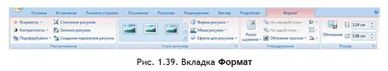

Розділ 4: Вставлення в текстовий документ графічних зображень
Графічні зображення в текстовому документі та їхні властивості
Під час створення текстового документа іноді виникає необхідність вставити до нього графічне зображення, яке ілюструє зміст тексту (рисунок, фотографія, схема, діаграма тощо) або графічно оздоблює документ (рамки, розділювачі, графічні маркери списків, логотипи тощо).
У 9-му класі ви вже вивчали, як у текстовому документі засобами Word 2007 створити векторне графічне зображення, що складається з графічних примітивів. Якщо ж потрібне графічне зображення вже створено іншими засобами і зберігається на зовнішньому носії, то його можна вставити в потрібне місце документа.
У текстовий документ можна вставити як векторні, так і растрові зображення (рис. 1.34). Їх можна знайти в колекції Microsoft ClipArt, яка створена розробниками MS Office і входить до однойменного пакета програм, у різноманітних колекціях графічних зображень на зовнішніх носіях, в Інтернеті, у власних цифрових фотоальбомах та ін.
Рис. 1.34. Приклади графічних зображень
Також це можуть бути об’єкти WordArt і SmartArt, які створюються засобами Word 2007. Графічні зображення, вставлені в текстовий документ, мають певні властивості — розмір зображення, спосіб обтікання текстом, колір, товщина та штрих ліній контуру, заливка рисунка, спосіб розташування на сторінці тощо. З більшістю з них ви вже ознайомилися під час вивчення теми «Комп’ютерна графіка» в 9-му класі.
Для вставлення графічних зображень у документ використовують елементи керування групи Зображення вкладки Вставлення:
- Рисунок — для вставлення графічних зображень, які збережені у файлах на зовнішніх носіях;
- Графіка — для вставлення графічних зображень з готових колекцій карт
- Фігури — для вставлення графічних примітивів (прямокутників, овалів, ліній, зірок тощо);
- SmartArt — для вставлення різноманітних схем (організаційних, ієрархічних, циклічних тощо);
- Діаграма — для вставлення числових діаграм (гістограм, секторних діаграм, графіків тощо).
Вставлення графічних зображень з файлів
Для вставлення в текстовий документ графічного зображення з файлу, який зберігається на зовнішньому носії, слід виконати команду Вставлення → Зображення → Рисунок. Після цього у діалоговому вікні Вставлення рисунка (рис. 1.35) потрібно вибрати потрібний файл.
Для зручності пошуку файлу та його попереднього перегляду рекомендується у вікні Вставлення рисунка встановити режим подання об’єктів у вигляді ескізів. У разі потреби можна звузити коло пошуку, задавши формат файлу, його ім’я або місце зберігання.
Зображення з файлу вставляється у поточне місце документа подвійним клацанням на ескізі. Також можна у вікні Вставлення рисунка вибрати потрібний файл і натиснути кнопку Вставити у нижній частині вікна.
Вставлення графічних зображень з колекції Microsoft Office
Колекція Microsoft Office містить велику кількість мультимедійних об’єктів (кліпів): картинки, фотографії, звуки та відеофрагменти. Усі зображення в колекції розподілені за певними групами: Будівлі, Люди, Освіта та ін. Кожне зображення описується деякими ключовими словами (наприклад, учні, посуд, дерева, техніка тощо), за якими ці зображення можна знайти в колекції.
Для вставлення в текстовий документ графічного зображення з цієї колекції потрібно виконати Вставлення → Зображення → Графіка. Ці дії відкривають область Картинки (рис. 1.36), яка надає можливість здійснювати пошук потрібних зображень і переглядати ескізи знайдених.
Для цього в текстовому полі Шукати потрібно вказати ключові слова для пошуку (наприклад, люди, спорт), ім’я або шаблон імені файлу. Щоб звузити коло пошуку, у списку Переглядати можна вибрати, в яких колекціях шукати потрібний файл (наприклад, Усі колекції), а у списку Шукати об’єкти — тип мультимедійного об’єкта (картинки, фотографії тощо).
Коли потрібні значення параметрів пошуку встановлено, слід вибрати кнопку Почати. Ескізи знайдених зображень, які відповідають умові пошуку, будуть відображені в полі результатів. Щоб вставити знайдене зображення в документ, потрібно встановити курсор у місце вставлення та вибрати ескіз потрібної картинки в області Картинки або перетягнути ескіз у потрібне місце.
Якщо в такий спосіб знайти потрібне зображення не вдалося, можна виконати такі дії:
- Вибрати команду Упорядкувати кліпи, яка знаходиться в нижній частині області Картинки.
- У вікні Колекція кліпів (рис. 1.37) вибрати потрібну колекцію зі списку.
- Переглянути ескізи зображень у різних групах відповідно до тематики пошуку.
Коли потрібна картинка знайдена, її можна вставити в документ перетягуванням з вікна колекції в потрібне місце або використавши Буфер обміну. Відповідні команди для роботи з Буфером обміну розміщені в меню Редагування цього самого вікна та в контекстному меню ескізу зображення.
Здійснювати пошук потрібних картинок можна і в Інтернеті. Для цього потрібно вибрати посилання Картинки на сайті Office Online, яке знаходиться в нижній частині області Картинки, або натиснути кнопку Кліпи в Інтернеті на панелі інструментів вікна Колекція кліпів.
Редагування та форматування графічних зображень у текстовому документі
Вставлені в текстовий документ графічні зображення можна редагувати і форматувати. Перед виконанням будь-яких операцій з рисунком його потрібно виділити, вибравши вказівником. Навколо виділеного зображення з’являється контур у вигляді тонкої рамки з маркерами змінення розмірів, а для деяких зображень — ще й маркер обертання (рис. 1.38).
Наведення вказівника на один із цих маркерів змінює його вигляд на двосторонню стрілку, яка показує напрям можливого переміщення. Переміщення маркера в цих напрямах призводить до відповідної зміни розмірів рисунка. Використовуючи маркер обертання, об’єкт можна повернути на довільний кут.
Операції копіювання, переміщення та видалення вставлених графічних зображень виконуються звичними способами — за допомогою елементів керування Стрічки, команд контекстного меню, сполучень клавіш або перетягуванням (при цьому вигляд вказівника змінюється).
Слід пам’ятати, що вставлене зображення приєднується до оточуючого тексту, і якщо абзац із цим зображенням переміщується, рисунок пересувається разом із ним.
Форматування графічних зображень виконується за допомогою елементів керування тимчасової вкладки Формат (рис. 1.39), яка автоматично з’являється на Стрічці в розділі Знаряддя для зображення після виділення рисунка.
Значення властивостей зображення можна також встановити у діалоговому вікні Формат рисунка (рис. 1.43), яке відкривається з контекстного меню рисунка або кнопками відкриття діалогового вікна в групах вкладки Формат.
Якщо в документ планується вставити кілька графічних об’єктів і сформувати з них одне зображення, рекомендується розміщувати їх на полотні — спеціальній області документа. Полотно визначає розміри всього зображення, допомагає впорядковувати об’єкти та виконувати редагування.
Вставляють полотно на початку створення зображення за таким алгоритмом:
- Вибрати місце на сторінці, де буде вставлено полотно.
- Виконати Вставлення → Зображення → Фігури → Створити полотно.
Розміри полотна можна змінювати за допомогою маркерів зміни розмірів. Інші властивості полотна (заливка, розташування тощо) змінюються у вікні Формат полотна, яке відкривається через контекстне меню цього об’єкта.